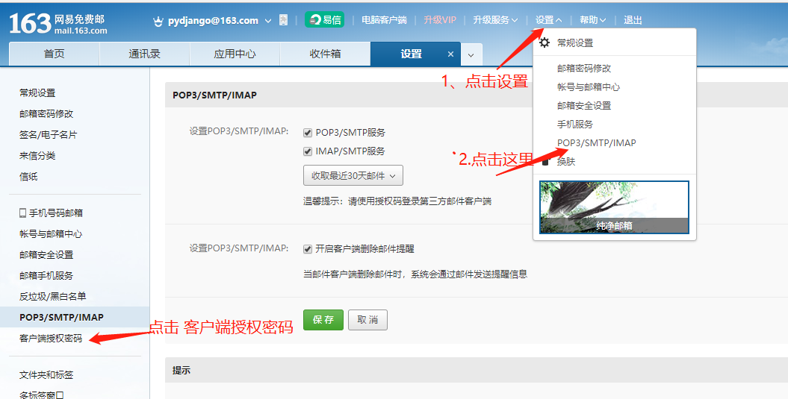
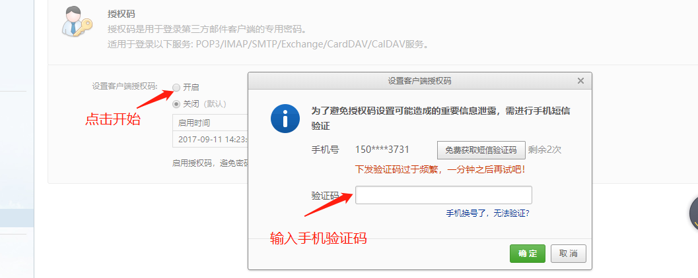
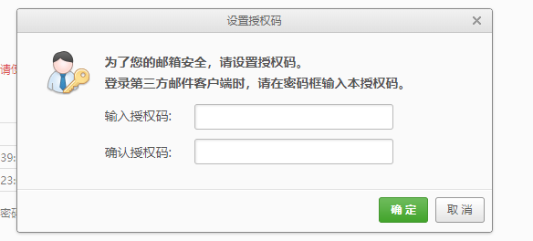

邮件扩展
发送邮件是在web中比较常见的，比如：注册验证码，密保邮箱，用户购买提示，广告推送等等。
flask中使用 flask-mail第三方扩展：
pip install Flask-Mail
配置邮件
| 参数 | 默认设置 | 说明 |
|---|---|---|
| MAIL_SERVER | default ‘localhost’ | 服务器地址 |
| MAIL_PORT | default 25 | 端口 |
| MAIL_USE_TLS | default False | 是否启用传输层安全 (Transport Layer Security, TLS)协议，默认为 False |
| MAIL_USE_SSL | default False | 是否启用安全套接层 (Secure Sockets Layer, SSL)协议，默认为 False |
| MAIL_DEBUG | default app.debug | 开启调试 |
| MAIL_USERNAME | default None | 邮箱名 |
| MAIL_PASSWORD | default None | 邮箱密码 |
| MAIL_DEFAULT_SENDER | default None | 邮件发件人，默认为 None，也可在 Message 对象里指定 |
| MAIL_MAX_EMAILS | default None | 邮件批量发送个数上限，默认为 None |
| MAIL_SUPPRESS_SEND | default app.testing | 默认为 app.testing，如果为 True，则不会真的发送邮件，供测试用 |
邮箱设置
这里使用163邮箱做为演示，注册好163邮箱有需要将smtp协议开启来，才能通过第三方客户端登录。

然后设置客户端授权码，点击开启这里会要求使用手机验证码。

输入验证码后提示输入密码要记住这个密码，密码就是等下要用来发邮件的密码。

示例：
from flask import Flask
from flask_mail import Mail, Message
app = Flask(__name__)
app.config.update(
DEBUG=True,
MAIL_SERVER='smtp.163.com', # 服务器地址
MAIL_PROT=25, # 邮件服务器端口
MAIL_USE_TLS=True, # 使用tls 安全协议
MAIL_USERNAME='pydjango@163.com', # 发送邮箱
MAIL_PASSWORD='qwer1234', # 密码
)
mail = Mail(app)
@app.route('/')
def index():
# subject 邮件标题
# sender 发送方
# recipients 接收方列表，如果多个接收方，那么是群发。
# cc 抄送列表
# bcc 密件抄送
# attachments 附件实例列表
# body 邮件文本正文
# html 网页形式的正文
msg = Message(subject="来自 flask", sender=app.config['MAIL_USERNAME'], recipients=['pydjango@163.com'],
cc=['957333489@qq.com','pydjango@163.com']
)
# 邮件内容
msg.body = "Flask test mail"
# html格式的邮件
msg.html = '<a href="http://127.0.0.1:5000/index">激活</a>'
# 添加附件 content_type对照表： http://tool.oschina.net/commons/
msg.attach(filename='mall.py',content_type='text/html',data=open('mall.py','r').read())
# 发送邮件
mail.send(msg)
return "Sent Succeed"
if __name__ == "__main__":
app.run()